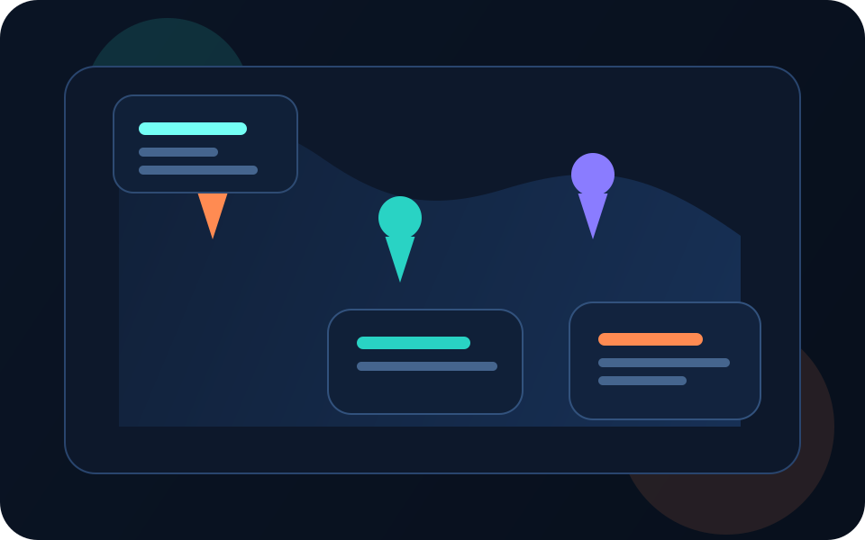

Entendo a necessidade
Transformo a ideia em uma estrutura clara antes de começar a construir.
Desenho a solução
Organizo visual, lógica e experiência para o projeto nascer mais sólido.
Entrego com identidade
Meu objetivo não é só funcionar, mas também passar mais confiança na apresentação.
Sobre mim
Desenvolvimento com base técnica, criatividade e vontade constante de evoluir.
Sou desenvolvedor em formação, cursando Sistemas de Informação, com experiência prática em múltiplas tecnologias e foco na criação de sistemas funcionais e soluções digitais.
Tenho base sólida em lógica de programação, Programação Orientada a Objetos, estrutura de dados, banco de dados e desenvolvimento de aplicações completas. Meu objetivo é transformar ideias em soluções úteis.
O que me move não é apenas programar. É construir algo que tenha aplicação real e gere valor.

Perfil em destaque
Autodidata
Organizado
Foco em resultado
Visão prática
Como posso ajudar
Áreas em que posso contribuir com projetos, páginas e sistemas.
Sites e páginas web
Criação de páginas em HTML, CSS e JavaScript com visual mais profissional, boa leitura e presença digital.
Sistemas e lógica
Construção de aplicações organizadas com regras de negócio, menus, estrutura modular e foco funcional.
Banco de dados
Modelagem, consultas SQL e organização de dados para dar base a sistemas mais consistentes.
Tecnologias e habilidades
Ferramentas que uso para construir experiências completas.
Back-end
- C#
- Python
Front-end
- HTML
- CSS
- JavaScript
Banco de dados
- SQL Server
- Consultas SQL
- Relacionamentos PK e FK
Ferramentas
- Visual Studio
- Git
- GitHub
POO
Estruturas de dados
Tratamento de exceções
Modelagem de banco
Lógica aplicada
Integração com APIs
Organização modular
Boas práticas
Projetos em destaque
Agora com elementos visuais e filtro interativo para navegar melhor pelo portfólio.

Impacto social
Creche+
Plataforma digital criada para modernizar o acesso a informações sobre creches, facilitar buscas por região e aproximar tecnologia de uma necessidade pública.
- Integração com mapas e localização
- Listagem de creches por região
- Projeto pensado para resolver um problema real

Produtividade
LifeQuest
Sistema que transforma tarefas do dia a dia em jogo, com progressão, recompensas e mecânicas de engajamento.
- Sistema de níveis e progressão
- Missões e objetivos
- Recompensas por tarefas concluídas

Negócio próprio
Sistema para Loja de Doces
Projeto voltado para organização de produtos, pedidos e fortalecimento da presença digital de um negócio.
- Controle de produtos
- Organização de pedidos
- Planejamento de site e divulgação

Criatividade técnica
Jogos e simulação
Desenvolvimento de ideias de jogos, sistemas inspirados em mecânicas competitivas e projetos criativos aplicando lógica em contextos não convencionais.
- Ideias de jogos com base em programação
- Sistema estilo competitivo dentro do Minecraft
- Modpacks personalizados com foco em sobrevivência
Experiência técnica
Capacidade prática para sair da ideia e chegar em uma aplicação funcional.
Desenvolvimento de sistemas
Criação de aplicações completas com estrutura, lógica de negócio, menus e organização modular.
Resolução de problemas
Análise de necessidades e implementação de soluções computacionais claras, úteis e evolutivas.
Integração e dados
Uso de banco de dados, consultas SQL e integração com APIs externas como mapas e localização.
Objetivo
Evoluir como desenvolvedor criando soluções que resolvam problemas de verdade.
Meu foco é participar da criação de sistemas e produtos digitais que unam tecnologia, organização, identidade visual e impacto real.
Desenvolvimento de software
Soluções para problemas reais
Projetos inovadores
Escalabilidade
Freelancer e oportunidades júnior